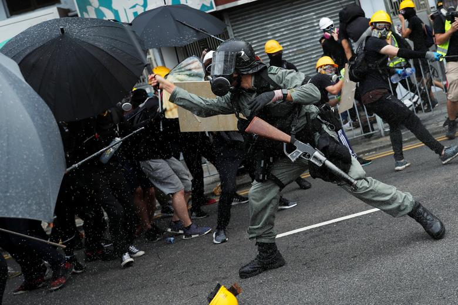

It's a summer of unrest in Hong Kong, with thousands of protesters taking to the streets every week.
It all started in June when millions came out to oppose a controversial bill that would have allowed extradition from Hong Kong to China. Carrie Lam, the city's leader, has shelved the bill, but the protests have morphed into something bigger.
Some are now calling for Lam to step down, greater democracy and an inquiry into alleged policy brutality.
As the demonstrations have dragged on, protesters have embraced more extreme, sometimes violent, tactics. And police have done the same.
While Hong Kong remains safe on the whole, those inside the city still worry about where this all leads and if there is an end in sight.
History and Background of Hong Kong Issues
&